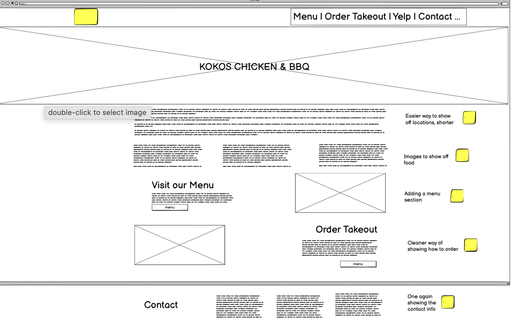

Lo-Fi Desktop
Here's the Lo-Fi Desktop Wireframe. The annotations are marked in yellow. Here they are in text: easier way to show off locations; images to show off food; adding new menu section; cleaner way of showing how to order; once again showing contact info.
